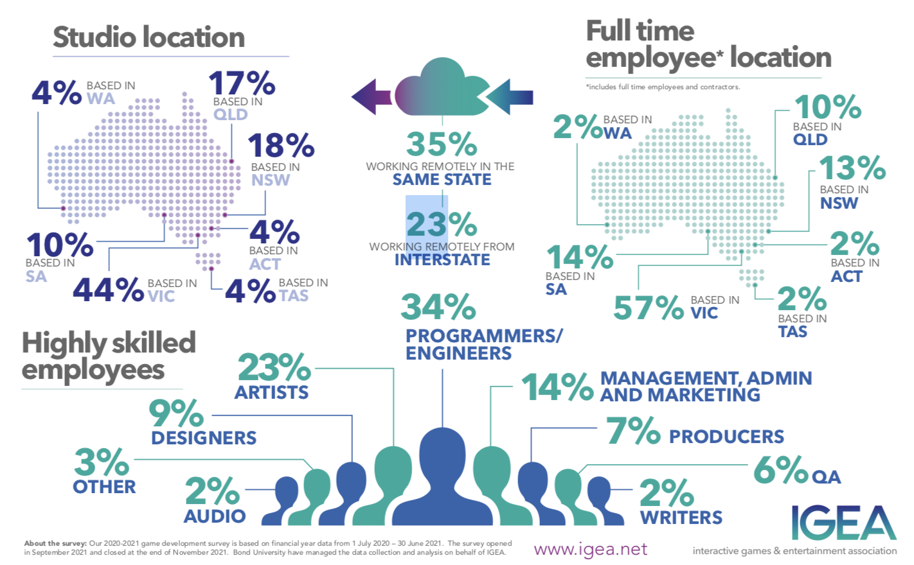
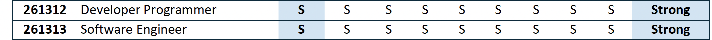

After analysing our individual ideal positions for employment, it can be assessed that uniquely we share similar goals which is driven from our shared passion of video games, because of this we report on industry data that is relevant to game development. According to data by IGEA, programmers and engineers are the highest in demand roles in Australia’s gaming industry – representing 34% of the workforce, with artists representing 23%, managers, admin and marketing 14% and the remaining workforce is divided amongst designers, producers, quality assurance, sound design, writers and other skills (IGEA, 2021). Given the nature of the positions that the team of Thirty Seven have aspirations for, outlining competencies and experience in programming, they would fit the mould in the most populous sector of the gaming industry.

Source: Interactive Games & Entertainment Association

Source: National Skills Commission
According to industry data supplied in the Skills Priority List by the National Skills Commission, software engineers and developer programmers have not only a national shortage at present but a strong demand in the workforce in the future, with the job market outlook to show a 30% increase over the next five years (Seek, undated). The two roles are similar yet different, where a developer and programmer are classed as a more creative force in the workplace, they would focus on one part of the development, whereas software engineers have a wider scope of a development and following principles in engineering. Regardless of the size of the project – programmers, developers, software engineers all share one thing in common and that is writing in one of the many programming languages, be it Python, C++ or Javascript as examples. Developers, programmers and software engineers use skills relevant to writing code, debugging it and providing documentation as to its operation.
It felt it was best to present the IT specific roles required for a Developer, Programmer and Software Engineer as they have programming part of their core job criteria, in addition to highlighting those roles that translate to each position so it is easier to pinpoint comparisons. This data was sourced from Seek.com.au.
| Programmer |
Developer |
Software Engineer |
- Software Development
- Javascript Programming
- SQL Queries
- HTML
- C# Programming
- Python Programming
- CNC
- Computer Science
- Engineering Drawing
- Mathematics
- CSS |
- Java Programming
- Javascript Programming
- Amazon Web Services
- HTML
- C# Programming
- Python Programming
- Node.JS
- Computer Science
- Microservices
- Typescript Programming
- Anuglar
- API
- Git Version Control System
- Test Driven Development
- DevOps
- .Net Core
- Microsoft Azure
- Rest API
- CSS
- PHP Programming |
- Java Programming
- Javascript Programming
- Amazon Web Services
- C++ Programming
- C# Programming
- Python Programming
- Node.JS
- Computer Science
- Microservices
- Typescript Programming
- Anuglar
- API
- Git Version Control System
- Test Driven Development
- DevOps
- Linux
- Microsoft Azure
- Rest API
- CSS
- Kubernetes |
For Programming, there are a set of specific personal skills that employers generally look for, but it can be assumed that these attributes are what talent acquisition managers are searching for when recruiting for developers and software engineers as well. These attributes are numeracy, thoroughness, time management, autonomy, multitasking, teamwork, computer literacy and willingness to learn, and it goes without saying that majority of employers across most industries are searching for these qualities.
Individually we can say
**which IT specific skills we don’t have
However, to counter those shortcomings the team at Thirty Seven can declare with confidence that those personal attributes are characteristics that each member has given the nature of work they have carried out in their employment history and particularly when it has come to collaborating on this group assignment.
As characterised by the nature of the work carried out to complete this group assignment, it can be reasonable to assume that our ideal jobs in the game development field, either as either a software engineer, developer or programmer, can be conducted effectively remotely. This is evidenced that in these fields, as 56% of employees work remotely and this is partly due to the nature of work performed significantly through the use of computers. Individually there is collective experience where it comes to comparing independent generic skills and specific skills it can be suggested that each member aligns themselves towards their passion and interest, as stated in
Ideal Jobs, it would be naive to assume that our exact ideal position would be where we eventuate, but perhaps in the vicinity to the professions explored in this section.